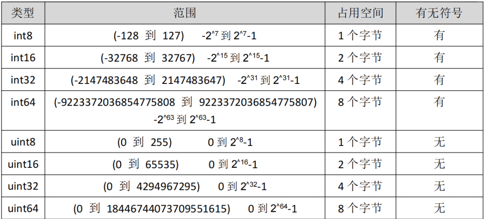
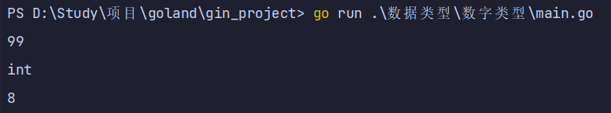

数字类型
1. 数字类型
2. Golang数据类型介绍
Go 语言中数据类型分为：基本数据类型和复合数据类型
基本数据类型有：
整型、浮点型、布尔型、字符串\ 复合数据类型有：
数组、切片、结构体、函数、map、通道（channel）、接口
3. 整型分为两大类
有符号整形按长度分为：int8、int16、int32、int64
对应的无符号整型：uint8、uint16、uint32、uint64

关于字节：
字节也叫 Byte，是计算机数据的基本存储单位。8bit(位)=1Byte(字节) 1024Byte(字节)=1KB
1024KB=1MB 1024MB=1GB
1024GB=1TB 。在电脑里一个中文字是占两个字节的。
4. unsafe.Sizeof
unsafe.Sizeof(n1) 是 unsafe 包的一个函数，可以返回 n1 变量占用的字节数
package main
import (
"fmt"
"unsafe"
)
// 查看占用内存 参数aa 为int类型 从地址取值
func sizeOf(aa *int) {
fmt.Println(*aa)
// 输出类型为 %T
fmt.Printf("%T\n", *aa)
// 查看占用内存
fmt.Println(unsafe.Sizeof(*aa))
}
func main() {
var a = 99
// 传入内存地址
sizeOf(&a)
}

5. int不同长度直接的转换
package main
import (
"fmt"
"unsafe"
)
// 类型转换 参数aa 为int类型 从地址取值
func transitionInt32(aa *int) {
fmt.Println(*aa)
// 输出类型为 %T
fmt.Printf("%T\n", *aa)
// 查看占用内存
fmt.Println(unsafe.Sizeof(*aa))
// 类型转换
dd := int32(*aa)
fmt.Println(dd)
// 输出类型为 %T
fmt.Printf("%T\n", dd)
// 查看占用内存
fmt.Println(unsafe.Sizeof(dd))
}
func main() {
var a = 127
// 传入内存地址
transitionInt32(&a)
}
6.
7. 浮点型
Go 语言支持两种浮点型数：float32 和 float64
package main
import (
"fmt"
"math"
"unsafe"
)
// 查看float类型 参数aa float64 从地址取值
func floatTest(aa *float64) {
fmt.Println(*aa)
// 输出类型为 %T
fmt.Printf("%T\n", *aa)
// 查看占用内存
fmt.Println(unsafe.Sizeof(*aa))
}
func main() {
a := math.Pi
// 传入内存地址
floatTest(&a)
}
8.
9. reflect.TypeOf查看数据类型
package main
import (
"fmt"
"reflect"
)
// 查看数据类型
func showType() {
a := 10
fmt.Println(reflect.TypeOf(a))
}
func main() {
showType()
}
10.
11. int常用转换
package main
import (
"fmt"
"strconv"
)
// int 常用转换
func intTransition() {
aStr := "123465"
// 转为int32
intV, _ := strconv.Atoi(aStr)
fmt.Printf("intV:%v--type:%T\n", intV, intV)
// 转为int64 base:10进制 bitSize:预期数值的bit大小，用于数值上限限制，最终返回的还是int64类型
int64V, _ := strconv.ParseInt(aStr, 10, 64)
fmt.Printf("intV:%v--type:%T\n", int64V, int64V)
// int转string
aInt := 123
strS := strconv.Itoa(aInt)
fmt.Printf("intV:%v--type:%T\n", strS, strS)
// int64转string
var aInt64 int64
aInt64 = 123
str64S := strconv.FormatInt(aInt64, 10)
fmt.Printf("intV:%v--type:%T\n", str64S, str64S)
}
func main() {
intTransition()
}
12.
13. int8转int16
package main
import "fmt"
func main() {
var a int8 = 20
var b int16 = 40
var c = int16(a) + b //要转换成相同类型才能运行
fmt.Printf("值：%v--类型%T", c, c) //值：60--类型 int16
}
14. int16转float32
package main
import "fmt"
func main() {
var a float32 = 3.2
var b int16 = 6
var c = a + float32(b)
fmt.Printf("值：%v--类型%T", c, c) //值：9.2--类型 float32
}
15. math.Sqrt强转
package main
import (
"fmt"
"math"
)
func main() {
var a, b = 3, 4
var c int
// math.Sqrt()接收的参数是 float64 类型，需要强制转换
c = int(math.Sqrt(float64(a*a + b*b)))
fmt.Println(c) // 5
}
16. int与str转换
package main
import (
"fmt"
"strconv"
)
func main() {
//2.1 int64转str
var num2 int64 = 123456
str2 := strconv.FormatInt(num2, 10)
fmt.Printf("%v---%T \n",str2,str2) // 123456---string
//2.2 str转int64
v1, _ := strconv.ParseFloat(str2, 64)
fmt.Printf("%v---%T\n",v1,v1) // 123456---float64
}
17. str与int64转换
package main
import (
"fmt"
"strconv"
)
func main() {
//1.1 int转sting
num1 := 123456
str1 := strconv.Itoa(num1)
fmt.Printf("%v---%T \n",str1,str1) // 123456---string
// 1.2 sting转int
_int, err := strconv.Atoi(str1)
fmt.Println(_int,err) // 123456 <nil>
fmt.Printf("%v---%T\n",_int,_int) // 123456---int
//2.1 int64转str
var num2 int64 = 123456
str2 := strconv.FormatInt(num2, 10)
fmt.Printf("%v---%T \n",str2,str2) // 123456---string
//2.2 str转int64
v1, _ := strconv.ParseFloat(str2, 64)
fmt.Printf("%v---%T\n",v1,v1) // 123456---float64
}